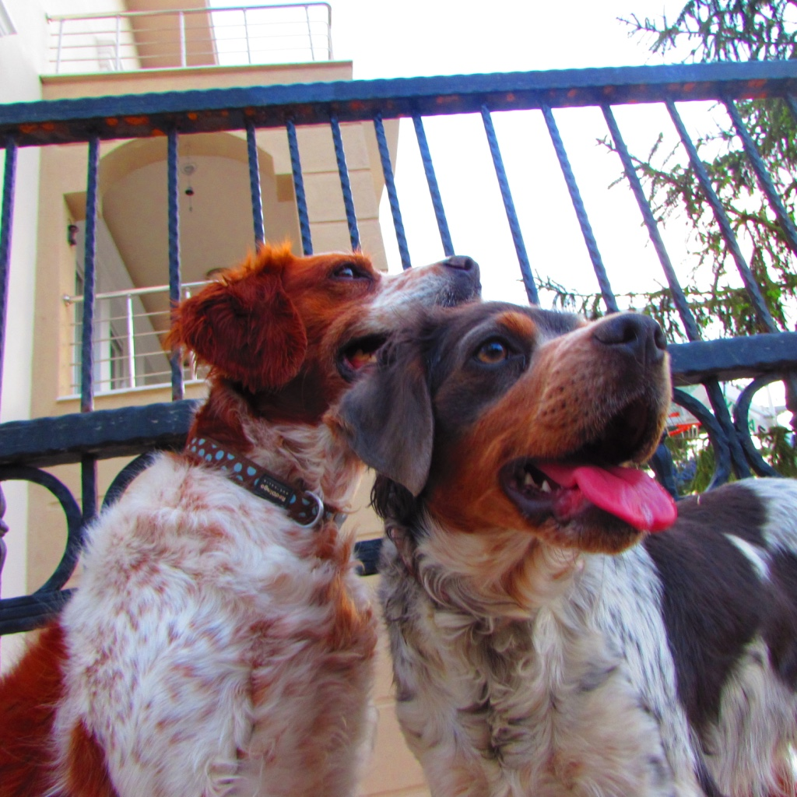

I. Causing emotional or physical pain is not allowed.
a. Jail time up to five days for
1. Hypocrisy
2. Disrespect to the flag and the lion
3. Liars
I. Liars constitute lies that affect others negatively in a concrete manner.
II. Any type of discrimination will not be tolerated
III. Euthanasia and assisted suicide are not allowed.
IV. Security will be on call and around for 24/7.
V. Everybody can, and is encouraged, to leave the house at any time.
VI. Emotional Support is Necessary
a. Every family, with the exception of allergies, will have an emotional support animal which has been approved by the community and fits the families needs.
VII. Working is Required.
a. Every adult will serve in the committee for at least a month to a year.
b. Unemployed can join into:
1. the millitary
2. laborers
3. janitorial tasks
4. work in the government
5. representation in the committee at least for a year.
VIII. Sanitation is essential
a. Every pest, rodent, etc. problem will be solved through extermination.
IX. Every person will look after the Community
a. Every person will plant a tree every year on their birthdays.
b. Every adult will donate blood on the day of freedom.
1. The Day of Freedom is May 29th.
I. This day commemorates the Independence of our nation.
c.Every person will give 12.5 percent of their annual income to the government.
1.This is the tax of the community.
I. This will be used to improve the community.
X. Education will be enjoyable and mandatory.
a.Schools will open on September the First, and the schools will close on June the First.
b.Education up to and including university is free.
c. Children will have a camping week for the last week of school.
1.The children will learn how to fish, hunt, and stay alive.
d. Every bilingual person will teach for 3 years.
1. Xenish, English.